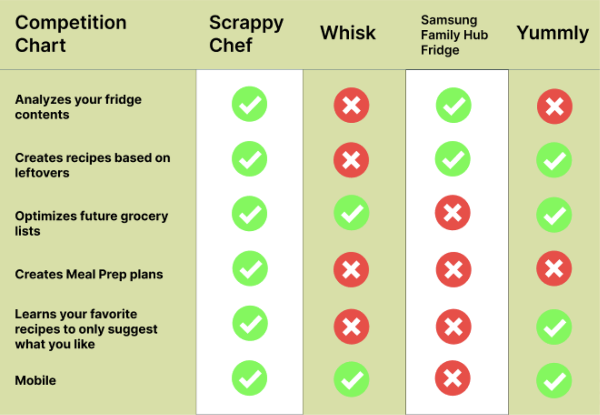

Overview: Alongside 3 other product designers, we designed a mobile application to help students and workers to develop healthy eating habits and reduce food waste by providing AI-generated recipes by scanning your fridge using our in-app camera.
The Problem: Alongside 3 other product designers, we designed a mobile application to help students and workers to develop healthy eating habits and reduce food waste by providing AI-generated recipes by scanning your fridge using our in-app camera.
Product Designer
Time:
One Semester
Product:
Mobile App platform for reducing food waste and receiving AI-generated recipes
Tools:
Figma
Skills:
Product Strategy, User Research, Mobile App Design
The Opportunity: By easing the process of curating meal recipes and creating a weekly meal planner, users can easily cook up a well-balanced,nutrious meal that will allow them to: 1) save time, 2) save money, 3) save wellbeing.
Access suggested recipes for today, recommended through user's interactions and patterns on app.
Scan your fridge or add your ingredients manually. After that, ScrappyChef will detect all your ingredients in the fridge.
Using your ingredients, ScrappyChef will provide you with endless amounts of recipes for you to look through and try out.
To help you curate healthy eating habits, ScrappyChef can also provide you with a weekly meal planner with different recipes and meals to try out on a 3-meal basis.
Our target users are individuals ages 18-30, mostly college students and workers who have no time and efforts to cook up a healthy meal.
User Personas
To figure out how we can differentiate ourselves from our competitors, we created a visual graphic that compares our features.
All 100% of our user research study individuals have expressed stronger interest in using a mobile app rather than a web app. Hence, we decided to design a mobile app.
Our team created three different visual value propositions, and through surveys and interviews with fellow college students, we've decided VVP #3 showcases the app in the most descriptive manner.
Through our research, we created a wireframe to solve the issue with these solutions:
Feel free to use this embed Figma code to look around our prototype! You are able to directly click on the buttons and icons, quite literally as if you're using a phone.
Design Intentions
Challenges
I had to learn how to balance my desire to be an independent worker vs. a team player. I love to work on my own time and on my own pace, but I also realized that I need to be on the same page as my teammates to progress forward efficiently.
I got to truly learn how to work in a team! This situation provided me with the opportunity to working in a space where new perspectives are welcome, ideas are constantly being bounced against each other, and we individually can work more with our own strengths. I also learned a lot on my listening skills and habits!
Final Conclusions
While this app did solve the main issue of promoting a safer, friendlier environment when buying/selling on campus, there are still areas of improvement that can be made in terms of the logistics. The concept of buying/selling is extremely dominant in almost all universites around the nation, and there's many potential when it comes to this app. It can be noted that buying and selling can be considered as two separate experiences through the app, especially because our listing option in the navigation bar allows exclusively only to list. Overall, this case study was extremely enjoyable, and I feel that I am more knowledge in creating products from ideation to execution!